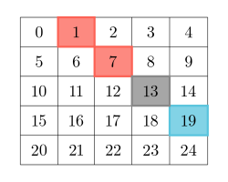

| Category | Difficulty | Likes | Dislikes |
|---|---|---|---|
| Algorithms | Medium | 141 | 210 |
array | hash-table | matrix
Given a 2D grid of size m x n, you should find the matrix answer of size m x n.
The cell answer[r][c] is calculated by looking at the diagonal values of the cell grid[r][c]:
leftAbove[r][c] be the number of distinct values on the diagonal to the left and above the cell grid[r][c] not including the cell grid[r][c] itself.rightBelow[r][c] be the number of distinct values on the diagonal to the right and below the cell grid[r][c], not including the cell grid[r][c] itself.answer[r][c] = |leftAbove[r][c] - rightBelow[r][c]|.A matrix diagonal is a diagonal line of cells starting from some cell in either the topmost row or leftmost column and going in the bottom-right direction until the end of the matrix is reached.
(2, 3) colored gray:

Return the matrix answer.
Example 1:
Input: grid = [[1,2,3],[3,1,5],[3,2,1]]
Output: Output: [[1,1,0],[1,0,1],[0,1,1]]
Explanation:
To calculate the answer cells:
| answer | left-above elements | leftAbove | right-below elements | rightBelow | |leftAbove - rightBelow| |
|---|---|---|---|---|---|
| [0][0] | [] | 0 | [grid[1][1], grid[2][2]] | |{1, 1}| = 1 | 1 |
| [0][1] | [] | 0 | [grid[1][2]] | |{5}| = 1 | 1 |
| [0][2] | [] | 0 | [] | 0 | 0 |
| [1][0] | [] | 0 | [grid[2][1]] | |{2}| = 1 | 1 |
| [1][1] | [grid[0][0]] | |{1}| = 1 | [grid[2][2]] | |{1}| = 1 | 0 |
| [1][2] | [grid[0][1]] | |{2}| = 1 | [] | 0 | 1 |
| [2][0] | [] | 0 | [] | 0 | 0 |
| [2][1] | [grid[1][0]] | |{3}| = 1 | [] | 0 | 1 |
| [2][2] | [grid[0][0], grid[1][1]] | |{1, 1}| = 1 | [] | 0 | 1 |
Example 2:
Input: grid = [[1]]
Output: Output: [[0]]
Constraints:
m == grid.lengthn == grid[i].length1 <= m, n, grid[i][j] <= 50